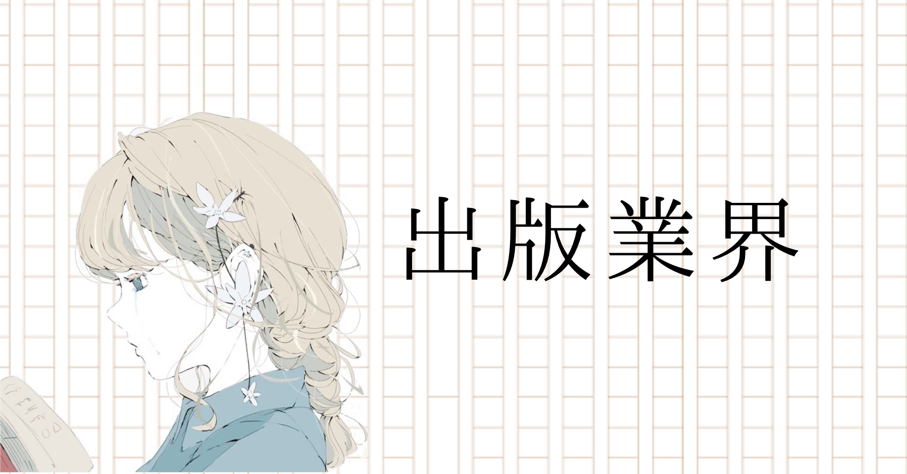

新しいものを作り、多くの人に共有していく仕事に魅力を感じたからです。その中で私は、マンガワンの編集者となりたいです。紙面の制限がなく、幅広い層に読まれているからこそ、色々な面白い作品が作れると考えています。具体的に作りたい作品は、原案：劉慈欣先生、作画：だろめおん先生によるSFバトル漫画です。ハードSFを、エンタメとしての面白さを保ちつつ、SFとしての魅力も兼ね備えた面白い作品にできると考えています。

小学館の選考体験記
エントリーシート
| 提出期日/提出方法 | ２月上旬/マイページ |
|---|---|
| 結果通知時期/通知方法 | １週間以内/マイページ |
▼次の中から、第1志望の部門・職種を選択してください。コミック誌その理由を記入してください(200)
▼次の中から、第2志望の部門・職種を選択してください。デジタル事業その理由を記入してください(200)
電子書籍の付加価値向上に努めたいからです。そのために、書籍をNFT化して、電子書籍を「所有している」と感じられるようにしたいです。さらに、スマートフォンのように画面が小さくても読める、縦読みなどの新しい形の漫画を、「ドラえもん」などの人気IPを利用しプロモーションしていくことで、その良さを広げていきたいです。読者の需要が変化している今、貴社でこそコンテンツに変革をもたらせると考えています。
小社が発行・運営する雑誌・書籍・Ｗｅｂメディアに対する意見・感想を記入してください。媒体名を1つ記入してください。→マンガワン意見・感想を記入してください(150)
小学館の作品をスマホ一つで手軽に読める、漫画好きにはたまらないアプリです。毎日多くの漫画が更新されるため、日々のスキマ時間に充足をもたらしてくれます。ふとあらすじを読んで気になって漫画を読んでみたら、いつの間にかチケットを購入して最後まで読んでいる、そんな経験が何度もありました。
▼小学館の強みとは？あなたが考える「小学館の強み」はなんですか？1文字以上180文字以下
新しい媒体、新しいコンテンツの形態へいち早く挑戦していることです。貴社はweb媒体への潜在価値を認識し、2012年という早さで裏サンデーを立ち上げており、今までの貴社作品とは一味違った作品を生み出しています。私は、今後電子書籍やメタバース普及などの外的要因によって、漫画の読み方が幅広く変化していくと考えており、貴社はその変化を先取って対応していくと考えています。
▼自己ＰＲ写真・イラストなど画像を１枚使って、自己ＰＲをしてください。画像を解説してください。1文字以上250文字以下
私は、「際に強い」です。この写真は、バレーボールの試合中、落ちそうになったボールを飛び込んで繋いだところです。私は、勉強、サークル、アルバイト、研究とあらゆる活動において、やるべきことをやってからさらに一歩踏み込んで行動してきました。この写真は、私が「限界からさらに一歩踏み出せる」ことを象徴しています。この強みは、編集者になっても生かせると考えています。つまり、作品作りにおいて、面白いと思ったところから、さらに面白くならないか、もう一歩踏み込んで取り組むことができると考えています。
▼大学時代にのめり込んだことを２つ、具体的なエピソードを盛り込みながらご紹介ください。※社会人の方は、１つは大学卒業後のことでも構いません。１つ目を記入してください。1文字以上350文字以下
私は放射性廃棄物処分に関する研究に力を入れました。原子力は歴史が浅く、さらに２０１１年の原子力発電所事故を受け、日本初の廃炉が試みられているため、次々と新しい技術が生まれている分野です。私はその点に魅力を感じ大学で専攻しました。その中で私は数万年にわたる処分計画で安全がどのように担保されるのかに興味を持ち、研究に取り組みました。研究で必要なデータを取得するために、私は研究室の同期や先輩、指導教員と積極的に会話をし、１年以上実験方法を吟味しました。その結果、適切なデータを取得し、対外的に成果が認められました。実際に福島で廃炉に携わる人に、「この事業は多くの努力が積み重なっている。あなたの研究もその一つだ」と言われたとき、私は社会に一つ貢献できたのだと喜びを感じました。
２つ目を記入してください。1文字以上350文字以下
私は４年間バレーボールサークルに力を入れました。私が最もチームに貢献したことは、一つ上の先輩の引退前最後の大会に参加し、優勝したことです。私は先輩たちに積極的に仲良くしてもらうなどの恩があり、最後を締めくくる大会としてよい結果を残してほしいと思い、その大会に挑戦しました。そのチームは、個々の技量は十分でしたが、優勝のために必要な連携が取れていませんでした。私は、チームメイト一人一人と密接に言葉を交わし、橋渡し役としてそれぞれがしたい戦術を吸い上げ、共有していきました。その結果、大会にて戦術面で相手より優位に立つことができ、格上相手に勝利し優勝することが出来ました。優勝の瞬間の、先輩の笑顔は強烈に記憶に残っており、先輩に有終の美を飾ってもらうことができて、私自身もうれしい気持ちになりました。
▼あなたの人生で「とっておき」の本２冊の作品名と著者名、その本を紹介する推薦文を記入してください。
１冊目の作品名を記入してください。
それでも街は廻っている
１冊目の著者名を記入してください。
石黒正数
１冊目の推薦文を記入してください。
1文字以上100文字以下
日常は巡る。近くに潜む謎とともに。これは、ただの日常漫画ではない。一つ一つのエピソードを最後まですべて読んで、一人の少女の成長物語が完結する、名作だ。
２冊目の作品名を記入してください。
三体
２冊目の著者名を記入してください。
劉慈欣
２冊目の推薦文を記入してください。
1文字以上100文字以下
文化大革命で肉親を殺され、反革命分子の烙印を押され、人類の悪性を目の当たりにした科学者は、地球外生命体と邂逅する。彼女にとって、それは「侵略者」か、「地球を救う救世主」か。
それでも街は廻っている
１冊目の著者名を記入してください。
石黒正数
１冊目の推薦文を記入してください。
1文字以上100文字以下
日常は巡る。近くに潜む謎とともに。これは、ただの日常漫画ではない。一つ一つのエピソードを最後まですべて読んで、一人の少女の成長物語が完結する、名作だ。
２冊目の作品名を記入してください。
三体
２冊目の著者名を記入してください。
劉慈欣
２冊目の推薦文を記入してください。
1文字以上100文字以下
文化大革命で肉親を殺され、反革命分子の烙印を押され、人類の悪性を目の当たりにした科学者は、地球外生命体と邂逅する。彼女にとって、それは「侵略者」か、「地球を救う救世主」か。
▼手本にしている人あなたが家族以外で手本にしている人と、その人から学んだことを記入してください。1文字以上150文字以下
研究室の教授から、物事に取り組む姿勢を学びました。彼はモチベーションに関わらず、どんなことがあってもただひたすらに、最高の強度で研究にのめり込んでいます。私はそこから、一つのことを極める人のマインドを学びました。近い将来、私も仕事に対してこのような姿勢を持てるようになりたいと考えています。
▼２年以内に購入した大切なものこの２年間に購入したものの中で、いちばん大切なものを、理由を含め教えてください。1文字以上90文字以下
「iPhone 11 Pro」です。私は元々最新の技術が詰め込まれているスマホが好きで、あえて当時最新の、自身にとってオーバースペックである機種を購入しました。大変使いやすく、今でも愛用しています。
▼10年後、出版人としての自分あなたは10年後、どんな出版人になっていたいですか？1文字以上150文字以下
新しい形のコンテンツで面白い作品を作れる人材になりたいです。近い将来、電子化、メタバースの波によって、縦読み漫画など本を読む形態が多様化すると考えています。しかし、面白い作品を作ることの本質は変わらないと思います。私は媒体へのニーズの多様化にいち早く対応し、最先端で作品作りに携わりたいです。
▼小社ならではの「新規ビジネス」を考えてください。
ネーミングを記入してください。
海外の、海外作家による漫画雑誌の創刊
上記のジャンル及び内容を記入してください。
1文字以上150文字以下
現在、日本で作られた漫画を海外に売り出すことは行なわれていますが、海外漫画家の受け皿は少ないと考えています。しかし、海外でのコンテンツ需要は年々拡大しています。そこで、海外の才能ある漫画家を集め、海外市場向けの漫画雑誌を作ることで、貴社の新たなビジネスの柱とすることが出来ると考えています。
海外の、海外作家による漫画雑誌の創刊
上記のジャンル及び内容を記入してください。
1文字以上150文字以下
現在、日本で作られた漫画を海外に売り出すことは行なわれていますが、海外漫画家の受け皿は少ないと考えています。しかし、海外でのコンテンツ需要は年々拡大しています。そこで、海外の才能ある漫画家を集め、海外市場向けの漫画雑誌を作ることで、貴社の新たなビジネスの柱とすることが出来ると考えています。
▼出版業界以外に志望する進路
出版業界以外に志望する進路があれば記入してください。
福島第一原子力発電所の廃炉事業に取り組む
そこで成し遂げたいことも教えてください。
1文字以上150文字以下
放射性廃棄物を安全かつ安定に処分することです。この事業は、日本初の試みであるという背景から、技術的、あるいは社会的課題を数多く抱えており、数十年にわたるプロジェクトであると認識しています。その中で私は新しい技術を生み出し、多くの人を巻き込みながら最先端に立ちこの課題に貢献していきたいです。
福島第一原子力発電所の廃炉事業に取り組む
そこで成し遂げたいことも教えてください。
1文字以上150文字以下
放射性廃棄物を安全かつ安定に処分することです。この事業は、日本初の試みであるという背景から、技術的、あるいは社会的課題を数多く抱えており、数十年にわたるプロジェクトであると認識しています。その中で私は新しい技術を生み出し、多くの人を巻き込みながら最先端に立ちこの課題に貢献していきたいです。
課題作文 テーマ「絶対に笑ってはいけない」20×38行以上、40行以内
手書き
注意した点
・量が膨大なので、計画的に書く
・企画と作文は、他の人に見てもらう
・企画と作文は、他の人に見てもらう
WEBテスト
| 形式 | デザイン思考テスト |
|---|---|
| 難易度・ボーダー | かなり高いと思われる |
| 対策方法 | たくさん練習をする |
2次ES＆１次面接
| 面接時期 | 2月下旬 |
|---|---|
| 面接時間 | 15分 |
| 面接官の人数・役職/学生の人数 | 若手社員2人/学生１ |
| 結果通知時期/方法 | 1週間以内/マイページ |
質問内容
【2次ES】
・自由にお金を使えたら
・挫折経験
・面接で聞かれたくないこと
・自分のこれまでの人生にタイトルをつけるなら など
【1次面接】
・志望動機
・自己PR
・理系修士なのになんで出版社？
・入社してやりたいことは？
・マンガワンが競合と比べて優れている点は？
・使っている漫画アプリ
・コミックとデジタルどっちやりたいか
・紙は読まない？
・一番最初に漫画を読んだのは？
・小学生の時面白いと思っていた漫画
・今面白いと思う漫画
・企画について
・なぜ漫画？
・ちゃおについての意見
・自由にお金を使えたら
・挫折経験
・面接で聞かれたくないこと
・自分のこれまでの人生にタイトルをつけるなら など
【1次面接】
・志望動機
・自己PR
・理系修士なのになんで出版社？
・入社してやりたいことは？
・マンガワンが競合と比べて優れている点は？
・使っている漫画アプリ
・コミックとデジタルどっちやりたいか
・紙は読まない？
・一番最初に漫画を読んだのは？
・小学生の時面白いと思っていた漫画
・今面白いと思う漫画
・企画について
・なぜ漫画？
・ちゃおについての意見
注意した点・感想
・2次ESは30分しか書く時間がないので、あらかじめ聞かれそうなことを考えておく
・面接時間が短いので、端的に答える
・面接時間が短いので、端的に答える
２次面接＆筆記試験
| 面接時期 | 3月上旬 |
|---|---|
| 面接時間 | 15分 |
| 面接官の人数・役職/学生の人数 | 中堅社員2人/学生１ |
| 結果通知時期/方法 | 1週間以内/マイページ |
質問内容
【筆記試験】：時事問題マーク試験50問
・宇宙は高さ何メートルから？
・韓国の歴代大統領並べ替え
・前澤がやったこと
・赤道の速さ
・ギリシャ文字並べ替え
・アンモニアの化学式
・ゴルゴの掲載雑誌
・芸人の兄弟関係
・オリンピックのメダルの色が違う種目を選ぶ
・ショパンの作曲じゃないもの
・海外作家と作品の並び替え
・イカゲームの内容
・大谷翔平のホームラン数と同じもの
・新庄剛志が所属したことのないチーム
・フランス国旗はどこが変わった？ など
【2次面接】
・自己PR
・新規ビジネスについて
・編集者に必要なものは？
・アプリについての感想
・どのくらい課金するか
・バイトについて
・研究について
・宇宙は高さ何メートルから？
・韓国の歴代大統領並べ替え
・前澤がやったこと
・赤道の速さ
・ギリシャ文字並べ替え
・アンモニアの化学式
・ゴルゴの掲載雑誌
・芸人の兄弟関係
・オリンピックのメダルの色が違う種目を選ぶ
・ショパンの作曲じゃないもの
・海外作家と作品の並び替え
・イカゲームの内容
・大谷翔平のホームラン数と同じもの
・新庄剛志が所属したことのないチーム
・フランス国旗はどこが変わった？ など
【2次面接】
・自己PR
・新規ビジネスについて
・編集者に必要なものは？
・アプリについての感想
・どのくらい課金するか
・バイトについて
・研究について
注意した点・感想
・伝統の筆記試験は、対策不可能なほど難しいので、3割も取れればいいほう（人事の人も、難しくしすぎたと言っていた）
・面接は時間が短いので端的に
・コンテンツについての深堀りはほとんどなかったほとんどなかった
・面接は時間が短いので端的に
・コンテンツについての深堀りはほとんどなかったほとんどなかった
３次面接＆筆記試験
| 面接時期 | 3月下旬 |
|---|---|
| 面接時間 | 15分 |
| 面接官の人数・役職/学生の人数 | 人事3人/学生１ |
| 結果通知時期/方法 | 1週間以内/マイページ |
質問内容
【3次面接】
・他社の選考状況
・人と衝突したらどうするか
・企画について
・第一志望かどうか
・なぜ出版の中でも小学館か
・研究について
【筆記試験】
・三題噺1,200字：「ユニコーン」「ペイ」「がくがく」
・大喜利４題
・他社の選考状況
・人と衝突したらどうするか
・企画について
・第一志望かどうか
・なぜ出版の中でも小学館か
・研究について
【筆記試験】
・三題噺1,200字：「ユニコーン」「ペイ」「がくがく」
・大喜利４題
注意した点・感想
・面接は志望度を問われるので、どれだけ企業研究をするかが大事
・圧迫っぽさを感じた
・作文試験は何回か練習しておけばかける
・大喜利は、つまんなくてもいいからたくさん書いておく
・圧迫っぽさを感じた
・作文試験は何回か練習しておけばかける
・大喜利は、つまんなくてもいいからたくさん書いておく
対策イベント！
４次面接
| 面接時期 | 4月上旬 |
|---|---|
| 面接時間 | 15分×２ |
| 面接官の人数・役職/学生の人数 |
1回目：役員5～6人 2回目：役員5～6人 学生はいずれも１ |
| 結果通知時期/方法 | 1週間以内/マイページ |
質問内容
【1回目】
・志望動機
・企画について
・注目している漫画
・今後伸びそうな漫画
・研究について
【2回目】
・志望動機とその深堀り
・研究について
・コロコロについて
・電子はどのくらい使う？
・本当に出版社でいいのか
・志望動機
・企画について
・注目している漫画
・今後伸びそうな漫画
・研究について
【2回目】
・志望動機とその深堀り
・研究について
・コロコロについて
・電子はどのくらい使う？
・本当に出版社でいいのか
注意した点・感想
・役員の人は威厳があるので、緊張しすぎないよう頑張る
・質問に対してちゃんと答えられれば大丈夫
・面接後に健康診断を受ける
・質問に対してちゃんと答えられれば大丈夫
・面接後に健康診断を受ける
５次面接（最終面接）
| 面接時期 | 4月上旬 |
|---|---|
| 面接時間 | 15分 |
| 面接官の人数・役職/学生の人数 | 社長含め役員3人/学生5人 |
| 結果通知時期/方法 | 当日/電話 |
質問内容
・志望動機を簡単に
・社長の語りをひたすら聞く
・社長の語りをひたすら聞く
注意した点・感想
・確認面接なので落ちません
内定
| 内定時期 | 4月上旬 |
|---|---|
| 承諾検討期間 | 不明 |
| 承諾or辞退 | 辞退 |
| 承諾or辞退理由 | 同業他社にいくため |
| 内定者属性（大学とか文理とか） | 辞退したため不明 |
選考全体の感想
内定先に興味を持ったきっかけ
漫画が好きだから
どういった基準でこの企業を選んだか
・自分の好きな漫画があること
・裁量が大きい
・裁量が大きい
選考を通して重要視されたと感じた点
・人柄。特に真面目さが見られていると思った
同業他社と比べてこの企業の魅力は？
・ドラえもんやコナンなど最強のIPを持ち、そこからのビジネス展開が強い
・知名度
・知名度
この企業を受けるにあたって工夫した点
・出版社の中でも特に小学館を志望する理由を考える。コミック志望者は大体ジャンプが好きだから、そこを考えていないと志望度が低いとみなされる
社員（と内定者）にどのような印象を持ったか
・真面目
・優しい
・優しい
後輩へのアドバイス
・集英社、講談社との違いを言語化しておくことが大事です。なぜ小学館かはかなり深堀られるので。
・「コナンが好き」とか「ドラえもんが好き」とかは他の就活生と差別化できないので、志望動機としてはやめたほうがいいです。本当に好きなら、細かく説明できるようにすればいいと思います。
・デザイン思考テストでかなり絞られてました。初見だと大変なので、対策したほうがいいです。
・「コナンが好き」とか「ドラえもんが好き」とかは他の就活生と差別化できないので、志望動機としてはやめたほうがいいです。本当に好きなら、細かく説明できるようにすればいいと思います。
・デザイン思考テストでかなり絞られてました。初見だと大変なので、対策したほうがいいです。